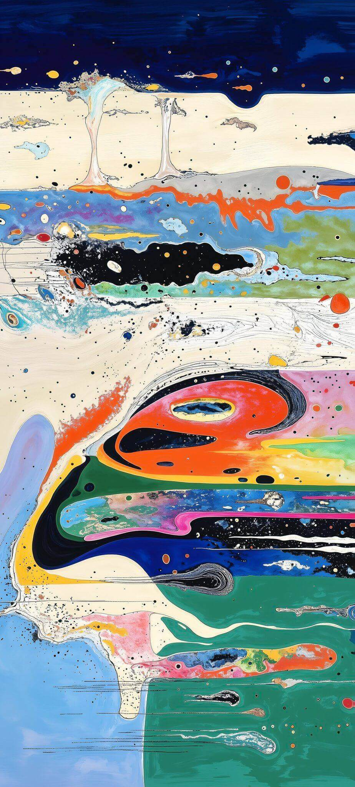
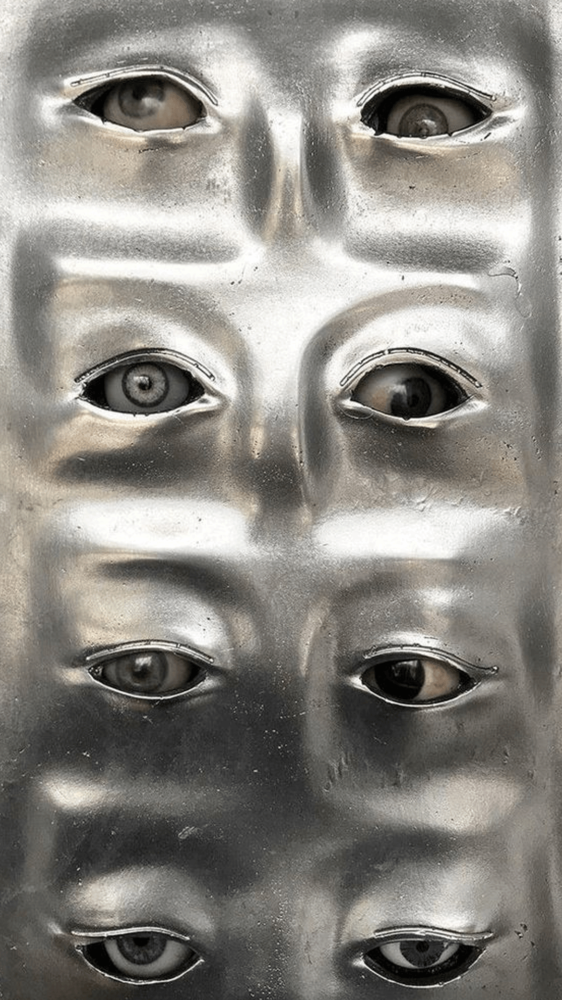
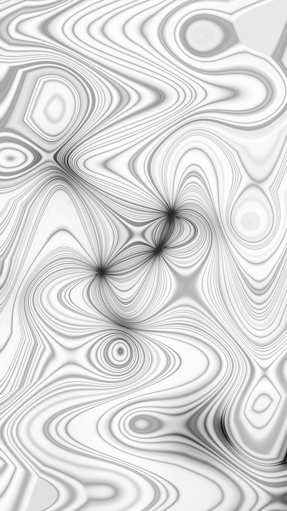
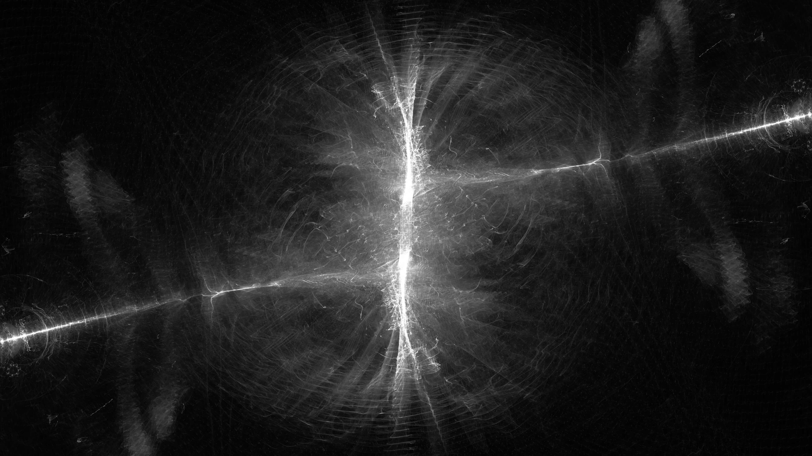

Archive
This page works as a visual field of fragments: screenshots, cropped references, textures, objects, interfaces, and recurring motifs. Repetition, contrast, and close looking shape the archive into a mood board.



